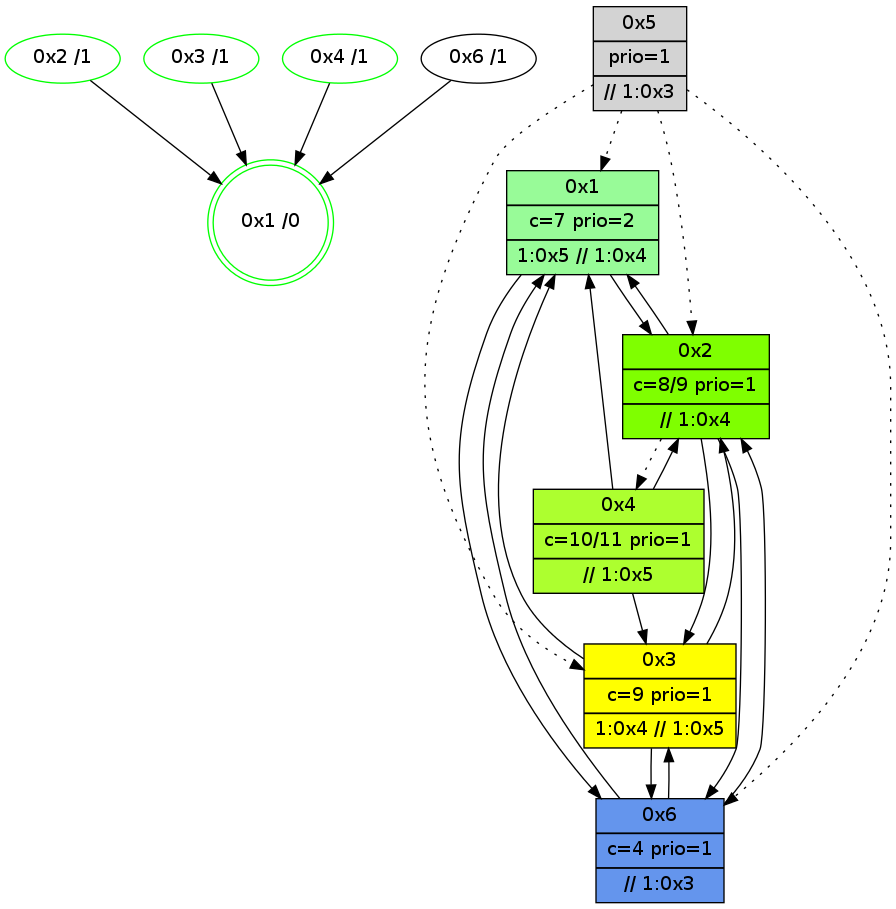

>> << IDX [start] -100 -25 -5 +0 +5 +25 +100 [910.057646036]
 Previous packets
----------------------------------------------------------------------
905.136564 beacon01(adaf) #0 coord=01,02,05,03,04,06 cycle=432.0ms assoc
-- color-indic=1 64 08 ce
905.146524 beacon02(adaf) #0 coord=01,02,05,03,04,06 cycle=432.0ms assoc 64 59 31
905.156525 beacon05(adaf) #0 coord=01,02,05,03,04,06 cycle=432.0ms assoc 64 ff 1b
905.166525 beacon03(adaf) #0 coord=01,02,05,03,04,06 cycle=432.0ms assoc 64 63 3f
905.176526 beacon04(adaf) #0 coord=01,02,05,03,04,06 cycle=432.0ms assoc 64 c5 15
905.186525 beacon06(adaf) #0 coord=01,02,05,03,04,06 cycle=432.0ms assoc 64 b1 09
905.198048 [STC(6)->1 #0.108 new-neigh,tree-change,inconsistent-stability,to-color d=1]
905.202655 [STC(4)->1 #0.108 new-neigh,tree-change,inconsistent-stability,stable,to-color d=1]
905.204469 [Color(2) seq=108 @0:0 color=8 prio=1 >1.@3 >>1.@3,1.@4,1.@5 c=4,7;0,1,2,5,6]
905.208672 [STC(3)->1 #0.108 new-neigh,tree-change,inconsistent-stability,stable,to-color d=1]
905.210956 [Color(3) seq=94 @0:0 prio=1 >1.@4 >>1.@3,1.@5 c=4,7,8;0,1,2,5,6]
905.215424 [Color(4) seq=76 @0:0 prio=1 >1.@3 >>1.@3,1.@4,1.@5 c=7;1,4,6,8]
----------------------------------------------------------------------
905.628672 beacon01(adaf) #0 coord=01,02,05,03,04,06 cycle=432.0ms assoc
-- color-indic=1 64 45 c9
905.638632 beacon02(adaf) #0 coord=01,02,05,03,04,06 cycle=432.0ms assoc 64 14 36
905.648633 beacon05(adaf) #0 coord=01,02,05,03,04,06 cycle=432.0ms assoc 64 b2 1c
905.658633 beacon03(adaf) #0 coord=01,02,05,03,04,06 cycle=432.0ms assoc 64 2e 38
905.668634 beacon04(adaf) #0 coord=01,02,05,03,04,06 cycle=432.0ms assoc 64 88 12
905.678634 beacon06(adaf) #0 coord=01,02,05,03,04,06 cycle=432.0ms assoc 64 fc 0e
905.689785 [Hello(1): seq=610 sym=2,6,3 sysInfo=hasWarning,coloring-mode-on,ColoringModeRequestCalled stat=2:15,12,4,2/6:2,0,2,1/3:2,5,2,1]
905.692318 [Color(5) seq=54 @0:0 prio=1 >>1.@3,1.@5 c=1,7,8;0,2,3,4,5,6]
905.694029 [Hello(4): seq=711 sym=2,1,6,3 sysInfo=hasWarning stat=2:3,3,0,0/1:7,15,10,0/6:2,4,1,2/3:10,10,6,4]
----------------------------------------------------------------------
906.120779 beacon01(adaf) #0 coord=01,02,05,03,04,06 cycle=432.0ms assoc
-- color-indic=1 64 81 a6
906.130740 beacon02(adaf) #0 coord=01,02,05,03,04,06 cycle=432.0ms assoc 64 d0 59
906.140741 beacon05(adaf) #0 coord=01,02,05,03,04,06 cycle=432.0ms assoc 64 76 73
906.150741 beacon03(adaf) #0 coord=01,02,05,03,04,06 cycle=432.0ms assoc 64 ea 57
906.160741 beacon04(adaf) #0 coord=01,02,05,03,04,06 cycle=432.0ms assoc 64 4c 7d
906.170741 beacon06(adaf) #0 coord=01,02,05,03,04,06 cycle=432.0ms assoc 64 38 61
906.182928 [Color(4) seq=77 @0:0 prio=1 >1.@3 >>1.@3,1.@4,1.@5 c=7;1,4,6,8]
906.184967 [Hello(3): seq=709 sym=6,4,1,2 sysInfo=hasWarning stat=6:12,11,9,2/4:5,2,7,0/1:5,8,3,1/2:6,4,3,1]
906.186829 [Color(2) seq=109 @0:0 color=8 prio=1 >1.@3 >>1.@3,1.@4,1.@5 c=4,7;0,1,2,5,6]
906.188740 [Color(1) seq=137 @0:0 color=7 prio=2 >1.@3,1.@5 >>1.@3,1.@4 c=1,4,6,8;0,2,3,5]
906.193489 [Color(3) seq=95 @0:0 color=9 prio=1 >1.@4 >>1.@5 c=4,7,8;0,1,2,5,6]
----------------------------------------------------------------------
906.612887 beacon01(adaf) #0 coord=01,02,05,03,04,06 cycle=432.0ms assoc
-- color-indic=1 64 cd 16
906.622849 beacon02(adaf) #0 coord=01,02,05,03,04,06 cycle=432.0ms assoc 64 9c e9
906.632848 beacon05(adaf) #0 coord=01,02,05,03,04,06 cycle=432.0ms assoc 64 3a c3
906.642848 beacon03(adaf) #0 coord=01,02,05,03,04,06 cycle=432.0ms assoc 64 a6 e7
906.652849 beacon04(adaf) #0 coord=01,02,05,03,04,06 cycle=432.0ms assoc 64 00 cd
906.662848 beacon06(adaf) #0 coord=01,02,05,03,04,06 cycle=432.0ms assoc 64 74 d1
906.674595 [Hello(4): seq=712 sym=2,1,6,3 sysInfo=hasWarning stat=2:3,4,0,0/1:7,0,10,0/6:2,4,1,2/3:11,11,6,4]
906.678613 [Hello(1): seq=611 sym=2,6,3 sysInfo=hasWarning,coloring-mode-on,ColoringModeRequestCalled stat=2:15,12,4,2/6:2,0,2,1/3:2,6,2,1]
----------------------------------------------------------------------
907.104996 beacon01(adaf) #0 coord=01,02,05,03,04,06 cycle=432.0ms assoc
-- color-indic=1 64 09 79
907.114958 beacon02(adaf) #0 coord=01,02,05,03,04,06 cycle=432.0ms assoc 64 58 86
907.124957 beacon05(adaf) #0 coord=01,02,05,03,04,06 cycle=432.0ms assoc 64 fe ac
907.134959 beacon03(adaf) #0 coord=01,02,05,03,04,06 cycle=432.0ms assoc 64 62 88
907.144958 beacon04(adaf) #0 coord=01,02,05,03,04,06 cycle=432.0ms assoc 64 c4 a2
907.154960 beacon06(adaf) #0 coord=01,02,05,03,04,06 cycle=432.0ms assoc 64 b0 be
907.166690 [Hello(5): seq=669 asym=2,1,6,3 sysInfo=hasWarning stat=2:15,0,5,3/1:12,0,11,1/6:2,0,0,1/3:9,11,5,7]
907.172291 [STC(1) #0.109 new-neigh,tree-change,inconsistent-stability,stable,to-color d=0]
907.174230 [Color(3) seq=96 @0:0 color=9 prio=1 >1.@4 >>1.@5 c=4,7,8;0,1,2,5,6]
907.176935 [Color(1) seq=138 @0:0 color=7 prio=2 >1.@5 >>1.@4 c=1,4,6,8,9;0,2,3,5]
----------------------------------------------------------------------
907.597104 beacon01(adaf) #0 coord=01,02,05,03,04,06 cycle=432.0ms assoc
-- color-indic=1 64 71 d4
907.607065 beacon02(adaf) #0 coord=01,02,05,03,04,06 cycle=432.0ms assoc 64 20 2b
907.617066 beacon05(adaf) #0 coord=01,02,05,03,04,06 cycle=432.0ms assoc 64 86 01
907.627064 beacon03(adaf) #0 coord=01,02,05,03,04,06 cycle=432.0ms assoc 64 1a 25
907.637065 beacon04(adaf) #0 coord=01,02,05,03,04,06 cycle=432.0ms assoc 64 bc 0f
907.647065 beacon06(adaf) #0 coord=01,02,05,03,04,06 cycle=432.0ms assoc 64 c8 13
907.658981 [Hello(6): seq=626 sym=2,1,3 sysInfo=hasWarning stat=2:4,7,2,1/1:8,7,8,1/3:9,10,2,1]
907.661905 [Hello(1): seq=612 sym=2,6,3 sysInfo=hasWarning,coloring-mode-on,ColoringModeRequestCalled stat=2:15,12,4,2/6:2,0,2,1/3:2,6,2,1]
907.663713 [STC(6)->1 #0.109 new-neigh,tree-change,inconsistent-stability,to-color d=1]
907.668124 [Hello(4): seq=713 sym=2,1,6,3 sysInfo=hasWarning stat=2:3,4,0,0/1:8,1,11,0/6:2,4,1,2/3:11,12,6,4]
907.670964 [STC(4)->1 #0.109 new-neigh,tree-change,inconsistent-stability,stable,to-color d=1]
----------------------------------------------------------------------
908.089212 beacon01(adaf) #0 coord=01,02,05,03,04,06 cycle=432.0ms assoc
-- color-indic=1 64 b5 bb
908.099176 beacon02(adaf) #0 coord=01,02,05,03,04,06 cycle=432.0ms assoc 64 e4 44
908.109174 beacon05(adaf) #0 coord=01,02,05,03,04,06 cycle=432.0ms assoc 64 42 6e
908.119174 beacon03(adaf) #0 coord=01,02,05,03,04,06 cycle=432.0ms assoc 64 de 4a
908.129174 beacon04(adaf) #0 coord=01,02,05,03,04,06 cycle=432.0ms assoc 64 78 60
908.151261 [Color(4) seq=79 @0:0 color=10/11 prio=1 >>1.@5 c=7,9;1,4,6,8]
908.155274 [Color(2) seq=111 @0:0 color=8/9 prio=1 >>1.@4,1.@5 c=4,7,9;0,1,2,5,6]
908.157550 [Hello(3): seq=711 sym=6,4,1,2 sysInfo=hasWarning stat=6:14,11,10,2/4:5,2,7,0/1:7,9,3,1/2:7,4,4,1]
908.160677 [Color(3) seq=97 @0:0 color=9 prio=1 >1.@4 >>1.@5 c=4,7,8;0,1,2,5,6]
908.165459 [Color(1) seq=139 @0:0 color=7 prio=2 >1.@5 >>1.@4 c=1,4,6,8,9;0,2,3,5]
----------------------------------------------------------------------
908.581321 beacon01(adaf) #0 coord=01,02,05,03,04,06 cycle=432.0ms assoc
-- color-indic=1 64 f9 0b
908.591281 beacon02(adaf) #0 coord=01,02,05,03,04,06 cycle=432.0ms assoc 64 a8 f4
908.601283 beacon05(adaf) #0 coord=01,02,05,03,04,06 cycle=432.0ms assoc 64 0e de
908.611283 beacon03(adaf) #0 coord=01,02,05,03,04,06 cycle=432.0ms assoc 64 92 fa
908.621283 beacon04(adaf) #0 coord=01,02,05,03,04,06 cycle=432.0ms assoc 64 34 d0
908.631283 beacon06(adaf) #0 coord=01,02,05,03,04,06 cycle=432.0ms assoc 64 40 cc
908.643046 [Hello(4): seq=714 sym=2,1,6,3 sysInfo=hasWarning stat=2:3,4,0,0/1:8,2,11,0/6:2,4,1,2/3:12,13,6,4]
908.648023 [Hello(1): seq=613 sym=2,6,3 sysInfo=hasWarning,coloring-mode-on,ColoringModeRequestCalled stat=2:0,12,5,2/6:2,0,3,1/3:2,6,2,1]
----------------------------------------------------------------------
909.073431 beacon01(adaf) #0 coord=01,02,05,03,04,06 cycle=432.0ms assoc
-- color-indic=1 64 3d 64
909.083391 beacon02(adaf) #0 coord=01,02,05,03,04,06 cycle=432.0ms assoc 64 6c 9b
909.093392 beacon05(adaf) #0 coord=01,02,05,03,04,06 cycle=432.0ms assoc 64 ca b1
909.103393 beacon03(adaf) #0 coord=01,02,05,03,04,06 cycle=432.0ms assoc 64 56 95
909.113392 beacon04(adaf) #0 coord=01,02,05,03,04,06 cycle=432.0ms assoc 64 f0 bf
909.123393 beacon06(adaf) #0 coord=01,02,05,03,04,06 cycle=432.0ms assoc 64 84 a3
909.135069 [Hello(6): seq=627 sym=2,1,3 sysInfo=hasWarning stat=2:6,7,3,1/1:9,8,8,1/3:10,11,2,1]
909.137601 [Hello(3): seq=712 sym=6,1,2 sysInfo=hasWarning stat=6:14,11,10,2/1:8,10,3,1/2:7,4,4,1]
909.139476 [Color(2) seq=112 @0:0 color=8/9 prio=1 >>1.@4,1.@5 c=4,7,9;0,1,2,5,6]
909.142339 [Color(3) seq=98 @0:0 color=9 prio=1 >1.@4 >>1.@5 c=4,7,8;0,1,2,5,6]
909.144541 [Color(4) seq=80 @0:0 color=10/11 prio=1 >>1.@5 c=7,9;1,4,6,8]
909.146780 [Color(1) seq=140 @0:0 color=7 prio=2 >1.@5 >>1.@4 c=1,4,6,8,9;0,2,3,5]
----------------------------------------------------------------------
909.565539 beacon01(adaf) #0 coord=01,02,05,03,04,06 cycle=432.0ms assoc
-- color-indic=1 64 70 63
909.575500 beacon02(adaf) #0 coord=01,02,05,03,04,06 cycle=432.0ms assoc 64 21 9c
909.585500 beacon05(adaf) #0 coord=01,02,05,03,04,06 cycle=432.0ms assoc 64 87 b6
909.595499 beacon03(adaf) #0 coord=01,02,05,03,04,06 cycle=432.0ms assoc 64 1b 92
909.605500 beacon04(adaf) #0 coord=01,02,05,03,04,06 cycle=432.0ms assoc 64 bd b8
909.615502 beacon06(adaf) #0 coord=01,02,05,03,04,06 cycle=432.0ms assoc 64 c9 a4
909.627283 [Hello(4): seq=715 sym=2,1,3 sysInfo=hasWarning stat=2:3,4,0,0/1:9,3,11,0/3:12,13,6,4]
909.629352 [Hello(1): seq=614 sym=2,6 sysInfo=hasWarning,coloring-mode-on,ColoringModeRequestCalled stat=2:0,12,5,2/6:2,0,3,1]
909.631926 [STC(1) #0.110 new-neigh,tree-change,inconsistent-stability,stable,to-color d=0]